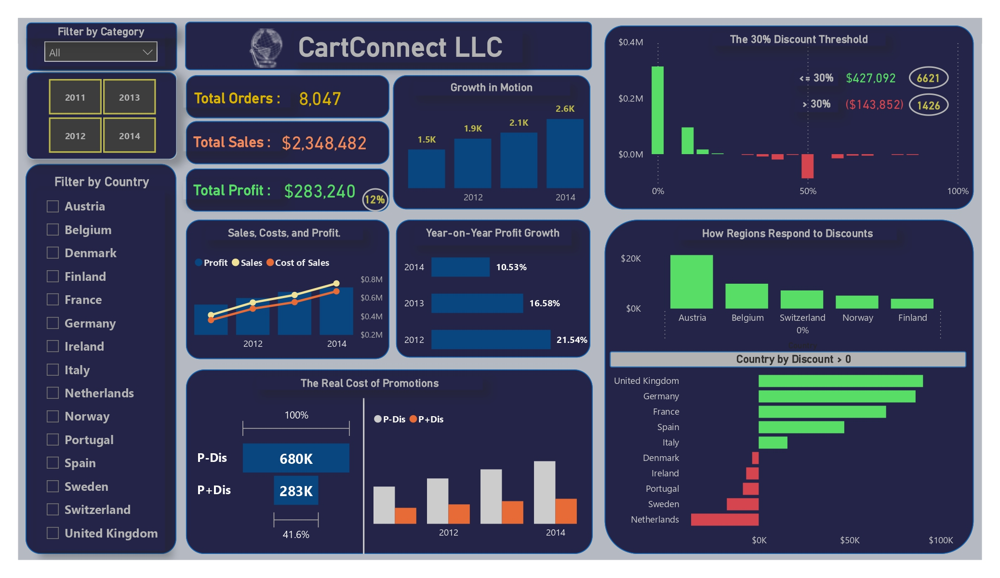

May 25, 2024
This Power BI analysis demonstrates how visual analytics can transform raw healthcare data into actionable insights.
By improving data quality, monitoring KPIs consistently, and applying data-driven decision-making, healthcare services can strengthen both operational efficiency and patient outcomes.

Power BI & Excel

In the competitive retail industry, profitability is often determined not just by how much a company sells, but by how efficiently it manages its costs, pricing, and discounts.
This Power BI dashboard explores CartConnect’s financial performance between 2011 and 2014, using data visualization and analytics to uncover patterns, challenges, and actionable insights.
Through data storytelling, the dashboard reveals how CartConnect’s rapid growth in sales and orders masked deeper profitability issues. The visuals collectively tell a story — one of opportunity, oversight, and strategic redirection.

Conducted end-to-end QA on Power BI metrics using SQL queries.
Validated KPIs such as sales, profit, and year-on-year growth for accuracy.
Produced a QA test document with queries to ensure data integrity.
Delivered a verified, reliable Power BI dashboard trusted for business reporting.